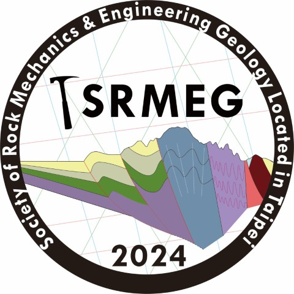
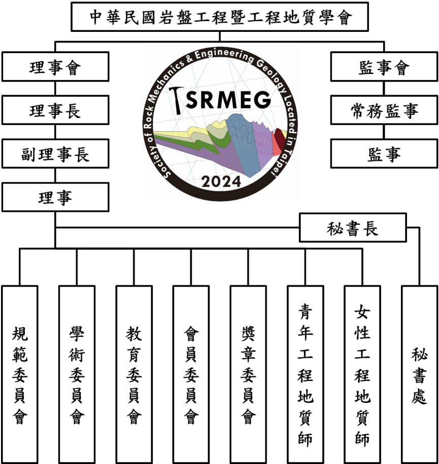

中華民國岩盤工程暨工程地質學會
學會成立大會 - 2024年7月7日 和逸飯店桃園館
組織架構
理事會成員
理事長: 董家鈞
副理事長: 翁孟嘉
常務理事: 王豐仁
理事: 董家鈞、詹佩臻、邱雅筑、翁孟嘉、王豐仁、林錫宏、游中榮、蕭富元、鐘志忠
監事會成員
常務監事: 王泰典
監事: 王泰典、顏呈仰、壽克堅
各委員會成員
規範委員會 - 主席: 王豐仁
學術委員會 - 主席: 鐘志忠
教育委員會 - 主席: 陳麒文, 副主席: 楊哲銘
會員委員會 - 主席: 羅立
獎章委員會 - 主席: 翁孟嘉
青年工程地質師 - 事務負責人: 林承翰
女性工程地質師 - 事務負責人: 邱雅筑、詹佩臻
組織架構圖
成立大會活動資訊
2024年7月7日 和逸飯店桃園館（桃園市中壢區春德路101號）
活動現場照片：


與國際學者的合影